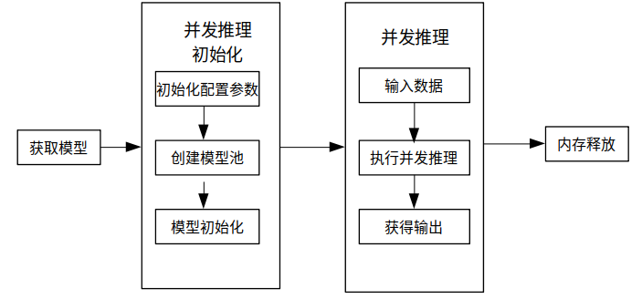

使用C++接口执行并发推理

概述
MindSpore Lite提供多model并发推理接口ModelParallelRunner，多model并发推理现支持Ascend 310/310P/910、Nvidia GPU、CPU后端。
通过MindSpore导出mindir模型，或者由模型转换工具转换获得mindir模型后，即可在Runtime中执行模型的并发推理流程。本教程介绍如何使用C++接口执行多model并发推理。
使用MindSpore Lite并发推理主要包括以下步骤：
创建配置项：创建多model并发推理配置项RunnerConfig，用于配置多model并发。
初始化：多model并发推理前的初始化。
执行并发推理：使用ModelParallelRunner的Predict接口进行多Model并发推理。
释放内存：无需使用MindSpore Lite并发推理框架时，需要释放自己创建的ModelParallelRunner以及相关的Tensor。

准备工作
以下代码样例来自于使用C++接口执行云侧推理示例代码。
通过MindSpore导出MindIR模型，或者由模型转换工具转换获得MindIR模型，并将其拷贝到
mindspore/lite/examples/cloud_infer/quick_start_parallel_cpp/model目录，可以下载MobileNetV2模型文件mobilenetv2.mindir。从官网下载Ascend、Nvidia GPU、CPU三合一的MindSpore Lite云侧推理包
mindspore-lite-{version}-linux-{arch}.tar.gz，并存放到mindspore/lite/examples/cloud_infer/quick_start_parallel_cpp目录。
创建配置项
配置项RunnerConfig会保存一些并发推理所需的基本配置参数，用于指导并发model数量以及模型编译和模型执行。
下面示例代码演示了如何创建RunnerConfig，并配置并发推理的worker数量。
// Create and init context, add CPU device info
auto context = std::make_shared<mindspore::Context>();
if (context == nullptr) {
std::cerr << "New context failed." << std::endl;
return -1;
}
auto &device_list = context->MutableDeviceInfo();
auto device_info = std::make_shared<mindspore::CPUDeviceInfo>();
if (device_info == nullptr) {
std::cerr << "New CPUDeviceInfo failed." << std::endl;
return -1;
}
device_list.push_back(device_info);
// Create model
auto model_runner = new (std::nothrow) mindspore::ModelParallelRunner();
if (model_runner == nullptr) {
std::cerr << "New Model failed." << std::endl;
return -1;
}
auto runner_config = std::make_shared<mindspore::RunnerConfig>();
if (runner_config == nullptr) {
std::cerr << "runner config is nullptr." << std::endl;
return -1;
}
runner_config->SetContext(context);
runner_config->SetWorkersNum(kNumWorkers);
Context的配置方法详细见Context。
多model并发推理现阶段支持CPUDeviceInfo、GPUDeviceInfo、AscendDeviceInfo几种不同的硬件后端。在设置GPU后端的时候需要先设置GPU后端再设置CPU后端，否则会报错退出。
多model并发推理不支持FP32类型数据推理，绑核只支持不绑核或者绑大核，不支持绑中核的参数设置，且不支持配置绑核列表。
针对大模型，使用model buffer进行加载编译的时候需要单独设置权重文件的路径，通过SetConfigInfo接口设置模型路径，其中
section为model_file，key为mindir_path；使用model path进行加载编译的时候不需要设置其他参数，会自动读取权重参数。
初始化
使用MindSpore Lite执行并发推理时，ModelParallelRunner是并发推理的主入口，通过ModelParallelRunner可以初始化以及执行并发推理。采用上一步创建得到的RunnerConfig，调用ModelParallelRunner的Init接口来实现ModelParallelRunner的初始化。
// Build model
auto build_ret = model_runner->Init(model_path, runner_config);
if (build_ret != mindspore::kSuccess) {
delete model_runner;
std::cerr << "Build model error " << build_ret << std::endl;
return -1;
}
ModelParallelRunner的初始化，可以不设置RunnerConfig配置参数，则会使用默认参数进行多model的并发推理。
执行并发推理
MindSpore Lite调用ModelParallelRunner的Predict接口进行模型并发推理。
// Model Predict
auto predict_ret = model_runner->Predict(inputs, &outputs);
if (predict_ret != mindspore::kSuccess) {
delete model_runner;
std::cerr << "Predict error " << predict_ret << std::endl;
return -1;
}
Predict接口的inputs和outputs，建议使用GetInputs、GetOutputs获得，用户通过SetData的方式设置数据的内存地址、以及Shape相关信息。
释放内存
无需使用MindSpore Lite推理框架时，需要释放已经创建的ModelParallelRunner。
// Delete model runner.
delete model_runner;